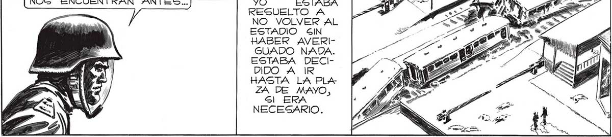
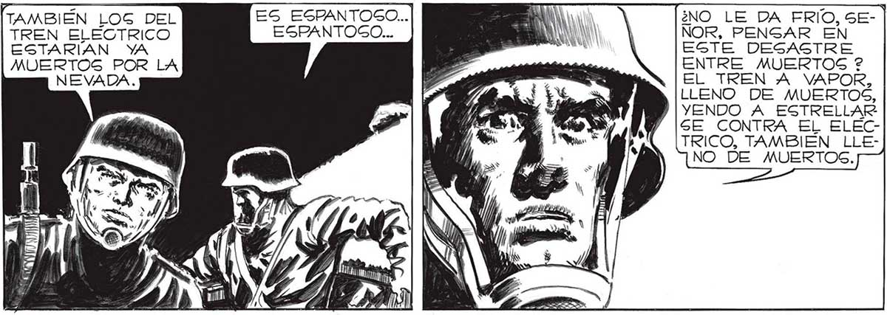
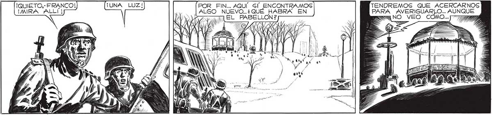

NO TENGO IDEA, FRANCO. ESTARAN MAS_ HACIA EL “CENTRO.. DOBLEMOS AQUÍ: GRUZAREMOS LA ESTACION Y NO FUE MAS GRAVE QUE TODO 139 TA Y LOG PASAJEROS DEL TREN AQUÍ” OCURRIO. ALGO TREMENDO, GEÑOR... UN TREN EMBISTIO” A Nos asia coc GEGUIREMOS. EN ALGÚN LADO LOS TADO SALIR A VAPOR, ESTABAN YA MUERTOS ENCONTRAREMOS... Sl ELLOG NO DEL ESTADIO, Y CUANDO CHOCO” CONTRA EL TREN NOG ENCUENTRAN ANTES... YO ESTABA ELECTRICO. RESUELTO A NO VOLVER AL ESTADIO SIN HABER AVERIGUADO NADA. ESTABA DECIDIDO A IR HASTA LA PLA ZA DE MAYO, Sl ERA NECESARIO. ¿NO LE DA FRIO, SENOR, PENGAR EN EGTE DESASTRE ENTRE MUERTOS ? EL TREN A VAPOR, LLENO DE MUERTOS, YENDO A EGTRELLAR GE CONTRA EL ELECTRICO, TAMBIÉN LLENO DE MUERTOS. TAMBIÉN LOG DEL ES ESPANTOCO... TREN ELECTRICO ESPANTOCO... ESTARÍAN YA MUERTOS POR LA NEVADA. Gl, FRANCO, ES BASTANTE MACABRO. FERO TE LO REPITO: NO ES PEOR QUE TODO LO DEMAS. MEJOR NO PENSAR...¡ VAMOS! == % Mm 3 dis Mé 1 bh A /; TENDREMOS QUE ACERCARNOS PARA AVERIGUARLO.. AUNQUE SS NO VEO COMO...J77 ¡QUIETO,: FRANCO! POR FIN... AQUÍ” Gl ENCONTRAMOS ¡MIRA ¡ALLÍ! ds ALGO NUEVO... ¿QUÉ HABRA EN EY Yeso EL PABELLON?


